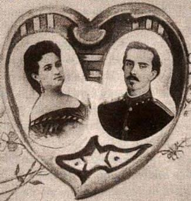

Los Hilos de Monik
Amalia e Ignacio
Publicado el 23 de diciembre de 2020 - 19 tweets - Hilo original en Twitter
1
Esta semana se estrenó en Camagüey "El Mayor".
Inspirada por lo que me contó
Aquí vamos.
2
Hay varias versiones de cómo se conocieron.
Se dice que fue en 1866 (Ignacio tenía 25 años y Amalia 24). Algunos textos dicen que fue en una tertulia en Camagüey, otros que en La Habana.
En la película, Amalia menciona haberlo visto antes en Barcelona. ¿Podría ser?
3
Francisca Margarita Amalia Simoni Argilagos (sip, ese era su nombre) era hija del rico cirujano José Ramón Simoni Ricardo, quien fue también el primer cubano en publicar un libro sobre apicultura.
Como parte su educación su padre la envió casi que a darle la vuelta al mundo.
4
Amalia era una dotada cantante e hija de catalana. Durante su viaje de 5 años por casi todas las capitales europeas, EE.UU. y Canadá, recibió clases de importantes maestros .
Dado que Ignacio estudió en Barcelona de los 11 a los 16 años, puede ser que sí coincidieran.
5
El hecho es que se enamoraron. Pero el padre de Amalia se opuso. Ignacio era de buena familia, pero su fortuna no se comparaba a la de los Simoni.
Amalia le dijo: "No te daré el disgusto, papá, de casarme en contra de tu voluntad; pero si no con Ignacio, con nadie lo haré"
6
Ignacio al día siguiente de estas palabras invitó a su futuro suegro a almorzar con él.
¿Qué hablaron? Pues ni idea, pero al finalizar la reunión el padre regresó a casa, le dio un abrazo a su hija y le comunicó que aceptaba el noviazgo.
7
Comenzó entonces un período de dos años de noviazgo. Ignacio estudiaba y trabajaba en La Habana, mientras Amalia estaba en Puerto Príncipe.
Este noviazgo dejó como testimonio un epistolario de 123 cartas de amor.
Lamentablemente solo se conservan las de Ignacio a Amalia.
8
He aquí una muestra:
Si quieres tener una idea (ya que no una medida porque no la admite) de mi amor, multiplica el tuyo, que me figuro que es grande, por la inmensidad del espacio y por la eternidad del tiempo y su resultado te la dará
(Carta de Ignacio a Amalia, 1867)
9
El 4 de julio de 1868 Ignacio regresó a Camagüey.
Traía consigo el traje que luciría Amalia en la boda que se celebró en la mañana del 1 de agosto en la iglesia de Nuestra Señora de la Soledad .
(¡Recuerda la fecha, es importante!)
Solo 3 meses vivió junta la pareja.
10
El 11 de noviembre de 1868 Ignacio parte a la manigua.
En diciembre los Simoni se trasladan a la finca La Matilde, en Najasa, donde la pareja puede convivir en medio de la guerra.
En mayo de 1869 nace su primogénito Ernesto, a quien apodaron El Mambisito.
11
Este fragmento de carta es conmovedor:
Algunas veces todo lo llevo con resignación pensando en la libertad de Cuba, pero con más frecuencia me parece una necesidad cruel que para servir a aquella tenga que vivir separado de tu lado, y mi corazón rebosa de inconformidad.
12
No fue Ignacio solo a la guerra: su primo Ernesto Agramonte (esposo de la hermana de Amalia, Inés Matilde) y su hermano Ramón Simoni, también se unieron.
El 1 de enero de 1869 los Simoni liberaron a sus 72 esclavos, adelantándose al Decreto de Abolición aprobado en febrero.
13
El día en que Ernesto cumplía un año, llegó un muchacho al rancho avisando de una columna enemiga.
Ignacio salió a interceptarlos, pero el enemigo cogió otro camino y la familia Simoni cayó prisionera y fue deportada.
Amalia e Ignacio no se volvieron a ver.
14
Cuando fueron apresados, el general Ramón Fajardo le propone a Amalia (embarazada) escribirle una misiva a su esposo en la que le pidiera abandonar su lucha, a lo que ella responde:
General, primero me corta usted la mano, antes que escriba a mi esposo que sea traidor.
15
Al llegar a la Casa de Gobierno, a donde fueron conducidos a su llegada a la ciudad, intentaron arrebatarle a Ernesto de sus brazos mientras gritaban "¡Es un varón! ¡Matadle, matar al mambí!"
Ya en New York, Amalia da a luz a Herminia, la hija que Ignacio no llegó a conocer.
16
Los Simoni terminaron en Mérida, donde Amalia recibió la noticia de la muerte de Ignacio en 1873 y como resultado cayó gravemente enferma.
Años después su hija le preguntó por qué no se casó de nuevo.
Su respuesta fue: “Porque no se puede amar más"
17
En México, Amalia conoció a José Martí y luego lo siguió a New York. Fue una importante figura recaudando fondos para la guerra de 1895.
En 1899 Amalia regresó definitivamente a Cuba. Murió en 1918 mientras su hija Herminia le tocaba el piano. Se declaró Duelo Nacional.
18
¿Y la película? Pues no la he visto, pero sí sé que los actores que interpretaron a Ignacio (Daniel Romero) y Amalia (Claudia Tomás) se enamoraron en el set y el 1 de agosto (¿recuerdas que es la fecha de la boda de Ignacio y Amalia?) de 2019 se casaron en la Quinta Simoni
19
Y termino con estos dos fragmentos que se unen perfectamente.
Amalia: "Yo no soy su viuda, soy su alma que se ha detenido un poco sobre la tierra"
Ignacio: "Hasta otro día, Amalia de mi vida. Consérvate y no dudes que aún después de la muerte te amará tu Ignacio".